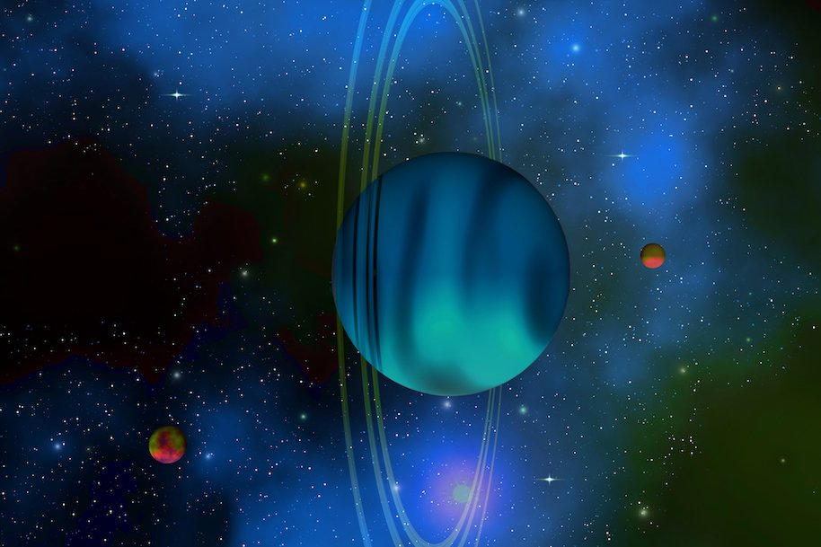
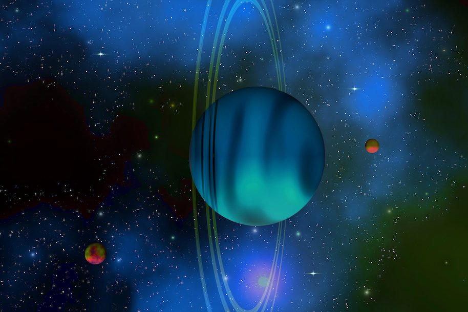

Earth
Title
Kerberos is a small natural satellite of Pluto, about 12 km (7.5 mi) in its longest dimension. It was the fourth moon of Pluto to be discovered and its existence was announced on 20 July 2011. It was imaged, along with Pluto and its four other moons, by the New Horizons spacecraft in July 2015. The first image of Kerberos was released to the public on 22 October 2015. Kerberos appears to be smaller than scientists expected and has a highly-reflective surface, counter to predictions prior to the Pluto flyby in July. “Once again, the Pluto system has surprised us,” said New Horizons Project Scientist Hal Weaver, of the Johns Hopkins University Applied Physics Laboratory in Laurel, Maryland. The new data, downlinked from the New Horizons spacecraft on Oct. 20, show that Kerberos appears to have a double-lobed shape, with the larger lobe approximately 5 miles (8 kilometers) across and the smaller lobe approximately 3 miles (5 kilometers) across. Science team members speculate from its unusual shape that Kerberos could have been formed by the merger of two smaller objects. The reflectivity of Kerberos’ surface is similar to that of Pluto’s other small moons (approximately 50 percent) and strongly suggests Kerberos, like the others, is coated with relatively clean water ice.

 

Fun facts
- one
- two
- three